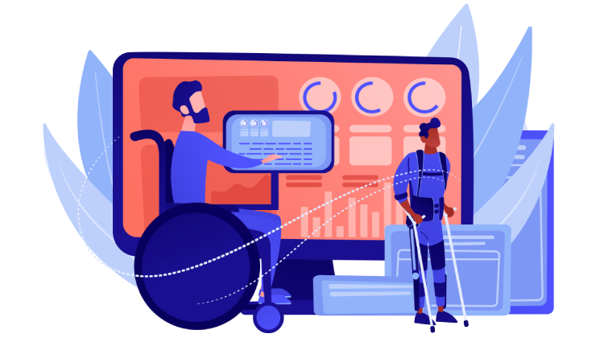

What is Assistive Technology?
Assistive technologies encompass a broad and ever-evolving range of devices, tools, and software applications designed to enhance the independence, productivity, and quality of life for individuals with disabilities or impairments. At the most basic level, assistive technologies can include seemingly simple aids like canes, walkers, magnifiers, and grabbing devices that help users with physical limitations perform everyday tasks. However, the field has advanced dramatically in recent decades, with the integration of cutting-edge electronics, robotics, and digital technologies.
One of the hallmarks of modern assistive technologies is their ability to seamlessly integrate with mainstream consumer electronics and digital platforms. For example, screen readers and text-to-speech software can allow individuals who are blind or have low vision to access information on computers, smartphones, and other digital devices. Similarly, voice recognition and eye-tracking systems empower users with physical disabilities to control and navigate through various software and online applications without relying on traditional input methods like keyboards and mice. This convergence of assistive tools with ubiquitous consumer tech has been a game-changer, reducing stigma, expanding access, and promoting greater inclusion.
Beyond just enhancing access, assistive technologies are also playing a vital role in fostering independence, productivity, and social participation for people with disabilities. Powered wheelchairs, for instance, grant users the freedom to ambulate and navigate their environments with minimal assistance. Smart home systems integrated with voice controls, sensors, and automated functions can enable independent living by allowing users to manage lighting, temperature, security, and other household tasks. In the educational and workplace realms, assistive tech like screen magnifiers, speech-to-text software, and digital note-taking tools empower students and employees to fully engage with learning materials and job responsibilities.
The field of assistive technology is also witnessing rapid advancements driven by innovations in artificial intelligence, robotics, and human-computer interaction. Emerging technologies like brain-computer interfaces, gesture-based controls, and context-aware intelligent assistants hold immense promise for expanding the capabilities and customization of assistive devices. Researchers are actively exploring ways to leverage these cutting-edge innovations to create more intuitive, adaptive, and empowering solutions for individuals with a wide range of disabilities and impairments.
However, despite these technological leaps, challenges remain in ensuring equitable access to assistive technologies. The high cost of specialized equipment, lack of insurance coverage, and limited availability in certain regions continue to create barriers, particularly for marginalized communities. Advocacy efforts, policy changes, and collaborative initiatives between the public and private sectors will be crucial to addressing these disparities and realizing the full transformative potential of assistive technologies. As society becomes increasingly digitized and automated, the role of these technologies in promoting inclusion, independence, and participation for people with disabilities will only grow more essential.
Benefits of Assistive Technology
Assistive technologies offer a wealth of benefits that can dramatically improve the lives of individuals with disabilities and impairments. Perhaps the most fundamental advantage is the enhanced independence and autonomy that these tools can provide. By enabling users to perform tasks and navigate their environments with reduced reliance on human assistance, assistive devices empower greater self-determination and control over one's daily activities. This sense of independence not only bolsters self-esteem and confidence, but also frees up caregivers and loved ones to focus on other aspects of support and companionship rather than constantly providing hands-on aid.
Closely tied to independence is the way assistive technologies can foster increased participation and inclusion in society. From accessing digital information and communications to engaging in educational, professional, and recreational pursuits, assistive tools help to break down the barriers that individuals with disabilities have historically faced. Screen readers, speech-generating devices, and alternative computer input methods, for example, enable full access to computers, smartphones, and other ubiquitous technologies that are essential for learning, working, and social interaction in the modern world. This, in turn, promotes greater equity, integration, and the ability for people with disabilities to fully contribute to their communities.
Assistive technologies also yield significant benefits in terms of physical, cognitive, and functional outcomes. Powered wheelchairs and mobility aids can improve cardiovascular health, muscle tone, and overall physical well-being by enabling increased movement and activity. Likewise, communication devices and cognitive support tools have been shown to enhance language development, literacy, and executive functioning skills in users with speech, language, or intellectual disabilities. In educational and vocational settings, assistive tech can be a game-changer, unlocking new pathways for learning, skill-building, and gainful employment that may have previously seemed out of reach.
Beyond the direct benefits to the individual user, assistive technologies also have the power to transform the lives of family members, caregivers, and loved ones. By reducing the physical, mental, and emotional toll of hands-on assistance, these tools can alleviate caregiver burden and stress, allowing for more quality time and energy to be devoted to fostering meaningful relationships and connections. Furthermore, the increased independence and participation enabled by assistive devices often results in improved overall well-being, reduced healthcare costs, and greater financial security for both the user and their support network.
Ultimately, the true value of assistive technologies lies in their ability to promote inclusion, empower personal agency, and enhance quality of life for individuals with disabilities. As these innovations continue to advance, becoming more sophisticated, personalized, and accessible, their transformative impact will only continue to grow. By breaking down barriers, fostering independence, and unlocking new possibilities, assistive technologies represent a powerful tool in the pursuit of a more equitable and accessible world for all.